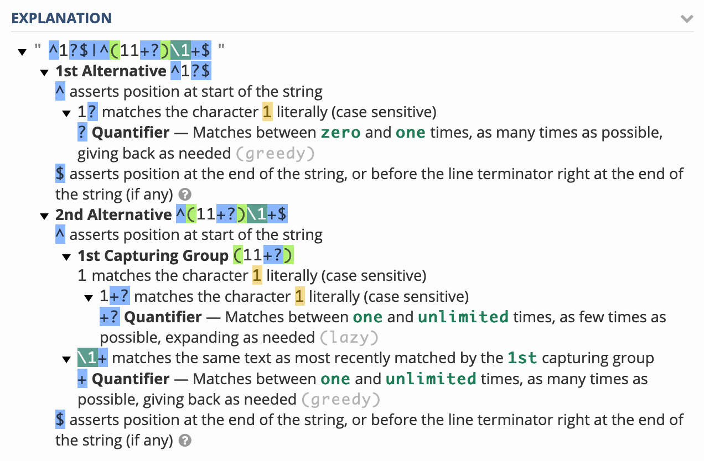

<!DOCTYPE html>
<head>
<meta charset="utf-8">
<meta name="viewport" content="width=device-width, initial-scale=1">
<meta name="google-site-verification" content="Yu7ZDPtBRajRVL44UXQQ1cT-vuIlgmn5igJw9GlE-ks" />
<link rel="apple-touch-icon-precomposed" sizes="57x57" href="../icons/favicon-apple-touch-114.png">
<link rel="apple-touch-icon-precomposed" sizes="114x114" href="../icons/favicon-apple-touch-114.png">
<link rel="apple-touch-icon-precomposed" sizes="72x72" href="../icons/favicon-apple-touch-144.png">
<link rel="apple-touch-icon-precomposed" sizes="144x144" href="../icons/favicon-apple-touch-144.png">
<link rel="icon" type="image/vnd.microsoft.icon" sizes="32x32 48x48" href="../icons/favicon.ico">
<link rel="icon" sizes="128x128" href="../icons/favicon.icns">
<link rel="icon" href="../icons/favicon.png" type="image/x-icon">
<script defer src="../katex/katex.min.js"></script>
<script>
	let delimeters_settings = {
            delimiters: [
                {left: "$$", right: "$$", display: true},
                {left: "$", right: "$", display: false},
            ]
        };
</script>
<script defer src="../katex/contrib/auto-render.min.js" onload="renderMathInElement(document.body, delimeters_settings);"></script>
<link rel="stylesheet" href="../katex/katex.min.css">
<link rel="stylesheet" href="../highlight.css">
<link rel="stylesheet" href="../style.css">
<link rel="stylesheet" href="../style-dark.css">
<title>소수</title>

<style>
	.container {
		font-family: -apple-system,BlinkMacSystemFont,Segoe UI,Helvetica,Arial,sans-serif,Apple Color Emoji,Segoe UI Emoji;
		margin: 45px auto;
		max-width: 980px;

		display: grid;
		grid-template-columns: auto 220px 745px auto;
		grid-template-rows: auto;
		grid-template-areas: ". sidebar main .";
		column-gap: 15px;

		box-sizing: border-box;
	}

	.markdown-body, .markdown-body-dark {
		grid-area: main;
		min-width: 200px;
		max-width: 745px;
		margin: 0 auto;
	}

	.sidebar, .sidebar-dark {
		position: fixed;
		width: 220px;
		height: calc(100% - 90px);
		overflow: scroll;
	}

	.katex {
		font-size: inherit;
	}

	.katex-display {
		display: block;
		padding: 1em 0;
		overflow: scroll;
		text-align: center;
	}

	.license {
		font-size: 12px;
		color: #6a737d;
	}

	.align-right {
	  text-align: right;
	}

	.trigger-list {
		display: none;
	}

	.visible {
		display: block;
	}

	.invisible {
		display: block;
	}

	@media (max-width: 1010px) {
		.container {
			margin: 45px auto;

			display: grid;
			grid-template-columns: auto 745px auto;
			grid-template-rows: auto;
			grid-template-areas: 
			". sidebar ."
			". main .";
			column-gap: 15px;
			row-gap: 15px;
		}

		.sidebar, .sidebar-dark {
			width: unset;
			height: unset;
			position: relative;
			grid-area: sidebar;
			min-width: 220px;
		}

		.trigger-list {
			display: block;
		}

		.invisible {
			display: none;
		}
	}

	@media (max-width: 775px) {
		.container {
			margin: 45px auto;

			display: grid;
			grid-template-columns: 15px auto 15px;
			grid-template-rows: auto;
			grid-template-areas:
			". sidebar ."
			". main .";
			column-gap: 0px;
			row-gap: 15px;
		}

		.markdown-body, .markdown-body-dark {
			max-width: 100%;
		}

		ul.article-list {
			padding-left: 0;
		}
	}

	.hidden {
		
	}

</style>
</head>
<body id="body" class="dark-mode-off">

<div class="container">
<aside id="sidebar" class="sidebar">
<ul id="navbar" class="navbar">
<li><a id="expand-list" class="trigger-list button-link" href="#"><span class="nav-button">🔽 Show</span></a></li>
</ul>
<div id="inside-sidebar" class="invisible">
<ul class="navbar">
	<li><a class="button-link" href="../"><span class="nav-button">🏠 Home</span></a></li>
	<li><a class="button-link" href="../more.html"><span class="nav-button">📝 More notes</span></a></li>
	<li><a class="button-link" href="https://github.com/loudcolour/loudcolour.github.io/blame/master/md/prime-number.md"><span class="nav-button">📜 Revisions</span></a></li>
	<li><a class="button-link" href="https://github.com/loudcolour/loudcolour.github.io/issues/new?title=소수"><span class="nav-button">📮 Create an issue...</span></a></li>
	<li><a class="button-link" href="https://duckduckgo.com/?q=site%3Aloudcolour.github.io"><span class="nav-button">🔎 Search...</span></a></li>
</ul>
<ul class="navbar">
	<li><a id="toggle-dark-mode" class="button-link"><span class="nav-button">🏙 Turn on dark mode</span></a></li>
</ul>
<div class="jump-to-id-list">
<ul>
<li><a href="#소수">소수</a>
<ul>
<li><a href="#소수는-무한히-존재한다">소수는 무한히 존재한다</a></li>
<li><a href="#소수-정리">소수 정리</a></li>
<li><a href="#미해결-문제">미해결 문제</a></li>
<li><a href="#소수를-판별하는-알고리즘">소수를 판별하는 알고리즘</a>
<ul>
<li><a href="#까지-나누어-보기">$\lfloor\sqrt{n}\rfloor$까지 나누어 보기</a></li>
<li><a href="#eratosthenes의-체로-소수-리스트-작성하기">Eratosthenes의 체로 소수 리스트 작성하기</a></li>
<li><a href="#miller-rabin-소수-판별법">Miller-Rabin 소수 판별법</a></li>
<li><a href="#정규표현식">정규표현식?</a></li>
</ul></li>
<li><a href="#특수한-소수">특수한 소수</a></li>
<li><a href="#참고문헌">참고문헌</a></li>
</ul></li>
</ul>

</div>
</div>
</aside>
<article id="markdown-body" class="markdown-body">
<!---
title: '소수'
category: Mathematics
language: Korean
--->

<h1 id="소수">소수</h1>
<p><strong>소수</strong>는 $1$과 자신 외의 자연수로 나누어 떨어지지 않는 수이다. 또한, 2개 이상의 소수의 곱으로 나타내어지는 수를 <strong>합성수</strong>라고 한다. 예를 들어, $17$은 소수이다. $54$는 합성수이다. 편의상, 이 노트에서는 양의 소수만을 소수라고 할 것이다. 약수 또한 양의 약수를 의미한다.</p>
<p><strong>명제</strong>. $\forall n\in\N, n\geq 2$의 $1$을 제외한 약수 중, 최소의 것은 소수이다.</p>
<p><em>증명</em>. 위에서 언급한 $1$을 제외한 최소의 약수를 $p$라고 하자. $p\mid n$이므로, $\exists m\in\N, n=mp$이다. 그런데 $p$가 소수가 아니라고 하면 $\exists a,b\in\N, (1&lt;a,b&lt;p) \land (p=ab)$이고, $n = abm$이다. 따라서 $a\mid n$이고, $p$가 최소의 $1$이 아닌 약수라는 조건에 모순이므로 $p$는 소수이다. □</p>
<p>위 명제에 따르면, 어떤 $1$이상의 자연수 $n$이 주어졌을 때, $n$의 $1$이 아닌 약수 중 최소의 것인 $p_1$이 존재할 것이고, $\frac{n}{p_1}\in\N$이므로, 다시 $1$이 아닌 약수 중 최소의 것을 $p_2$로 잡아, 이러한 연산을 계속하여 반복하는 것이 가능할 것이다. 이 연산이 성립하지 않을 때까지의 결과를 늘어 놓으면</p>
<p>$$
n &gt; \frac{n}{p_1} &gt; \frac{n}{p_1p_2}&gt; \frac{n}{p_1p_2p_3} \cdots
$$</p>
<p>와 같을 것이고, 위는 단조 감소의 자연수열이므로 결국에는 $\frac{n}{p_1p_2\cdots p_r}=1$인 $r\in\N$이 존재한다는 사실을 알 수 있다. 따라서 모든 $2$이상의 자연수는 소수 혹은 소수의 곱으로 표현하는 것이 가능하며, 더 나아가 소수와 합성수 중 하나에 해당함을 알 수 있다. 이 때, $n=p_1p_2\cdots p_r$과 같이 소수의 곱의 형식으로 표현한것을 <strong>소인수분해</strong>라고 한다.</p>
<h2 id="소수는-무한히-존재한다">소수는 무한히 존재한다</h2>
<p>가장 작은 소수인 $2$부터, 오름차순으로 소수들을 $2, 3, 5, 7, 11,\ldots$와 같이 나열할 수 있다. 그리고 이 수열은 끝나지 않는다. 소수는 무한히 존재하기 때문이다.</p>
<p><strong>정리</strong>. 소수는 무한히 존재한다.</p>
<p><em>증명</em>(Euclid의 증명). 소수가 총 $N$개 존재하여 유한하다고 가정하고, 최소의 소수부터 최대의 소수가 오름차순이 되도록 나열한 것을 $p_1, p_2, \ldots, p_N$이라고 하자. $P:=p_1p_2\cdots p_N+1$으로 두면, $P$는 소수가 아니므로 합성수일 것이고, $p_i\mid P$인 $i\in\{1,2,\ldots,N\}$이 존재할 것이다. 따라서 $p_i | 1 = P - p_1p_2\cdots p_N$여야 하나, 이를 만족하는 소수는 만족하지 않으므로 모순이다. 따라서 소수는 무한히 존재한다. □</p>
<p><em>증명</em>(Euler의 증명). 크기 오름차순으로 소수를 나열했을 때, $n$번째의 소수를 $p_n$으로 두자. $p_n\geq2$이므로, $s&gt;1$에 대해 $0&lt;p_n^{-s}&lt;1$이다. 따라서</p>
<p>$$
\begin{aligned}
\left(1-p_n^{-s}\right)^{-1} &amp;= \sum_{j=0}^{\infty}p_n^{-js} \\
\prod_{n=1}^{N}\left(1-p_n^{-s}\right)^{-1} &amp;=
\left(\sum_{j_1=0}^{\infty}p_1^{-j_1s}\right)
\cdots
\left(\sum_{j_N=0}^{\infty}p_N^{-j_Ns}\right) \\
&amp;=\sum_{\left(j_1,\ldots,j_N\right)\in\N^{N}}
\left(p_1^{j_1}\cdots p_N^{j_N}\right)^{-s}
\end{aligned}
$$</p>
<p>모든 자연수는 각자의 소인수분해에 일의적으로 대응한다는 사실을 통해, 위 식에서</p>
<p>$$
\prod_{n=1}^{N}\left(1-p_n^{-s}\right)^{-1} = \sum_{n=1}^{\infty}n^{-s}
$$</p>
<p>를 유도할 수 있다. 이 식의 좌변을 흔히 zeta 함수 $\zeta(s)$의 오일러 곱 표기라고 부른다. 또한, $n\in\N\setminus{0}$에 대하여 $n^{-s}\geq\int_{n}^{n+1}x^{-s}\,dx$가 성립하므로,</p>
<p>$$
\zeta(s) = \sum_{n=1}^{\infty}n^{-s}\geq \int_{1}^{\infty}x^{-s}\, dx
= \left[\frac{x^{1-s}}{1-s}\right]^{\infty}_{1} = -\frac{1}{1-s}
$$</p>
<p>임을 알 수 있다. 즉, $s\to1+0$일 때, $\zeta(s)\to\infty$이다. 만약 소수가 유한개인 $N$개 존재한다면, $\lim_{s\to1+0}\prod_{n=1}^{N}\left(1-p_n^{-s}\right)^{-1}$은 발산하지 않을 것이다. 하지만 $\lim_{s\to1+0}\zeta(s)=\lim_{s\to1+0}\sum_{n=1}^{\infty}n^{-s}$가 발산함은 이미 보여졌으므로, 이는 모순이다. 따라서 소수는 무한개 존재한다. □</p>
<p>참고로, Euler 곱 표기를 통하여 $\sum_{n=1}^{\infty}\frac{1}{p_n}$은 발산한다는 것을 보일 수 있다.</p>
<p><strong>명제</strong>. $\sum_{n=1}^{\infty}\frac{1}{p_n}$은 발산한다.</p>
<p><em>증명</em>. $s&gt;1$에 대해,</p>
<p>$$
\log\prod_{n=1}^N\left(1-p_n^{-s}\right)^{-1}
= -\sum_{n=1}^{\infty}\log\left(1-p_n^{-s}\right)
$$</p>
<p>이고, $p_n^{-s}\leq2^{-s}&lt;2^{-1}$, $0\leq x\leq2^{-1}$에 대해 $-\log(1-x)\leq2x$가 성립하므로,</p>
<p>$$
\log\prod_{n=1}^N\left(1-p_n^{-s}\right)^{-1}
\leq2\sum_{n=1}^{N}p_n^{-s}
\leq2\sum_{n=1}^{\infty}p_n^{-s}
$$</p>
<p>이 때, $\sum_{n=1}^{\infty}p_n^{-s}$은 $\sum_{n=1}^{\infty}n^{-s}$의 부분열이므로 수렴한다. $N\to\infty$일 때,</p>
<p>$$
\log\zeta(s)\leq2\sum_{n=1}^{\infty}p_n^{-s}
$$</p>
<p>이므로, $s\to1+0$일 때 좌항이 발산함에 따라 우항도 발산한다. □</p>
<p>실제로 $s_n=\sum^{N}_{n=1}{p_n}^{-1}$은 매우 느리게 발산하는 급수이다. $p$를 소수로 하여 $S(x)=\sum_{p\leq x}p^{-1}$로 두면, $S(x)\sim\log(\log x)$임이 알려져 있다.</p>
<p>위의 소수의 무한성에 관한 정리에 따르면, 소수는 무한히 존재하므로, 적당한 $n\in\N$을 잡으면, $p\geq n$인 소수 $p$가 항상 존재할 것이다. 그러나 그 소수가 생각한 만큼 가까이에 있으리라는 보장은 없다.</p>
<p><strong>정리</strong>(소수 사막의 존재). $\forall N\in\N$에 대해, 수열 $\{n\}_{n\in\N}=\{0,1,2,3,\ldots\}$ 중 합성수가 연속하여 $N$번 등장하는 부분(소수 사막)이 존재한다.</p>
<p><em>증명</em>. $2\leq m\leq N+1$인 $m\in\N$에 대해, $m \mid (N+1)!+m$이므로, $\{n\}_{n\in\N}$의 연속부분열인 $(N+1)!+2, (N+1)!+3, \ldots, (N+1)!+(N+1)$은 길이 $N$의 소수 사막이 된다. □</p>
<h2 id="소수-정리">소수 정리</h2>
<p>소수를 나열하여 보면, 특별한 규칙을 갖지 않는 듯이 보인다. 소수의 분포에서 규칙성을 찾아 일반화하는 것은, 수학자들의 오랜 과제였다. 여러 수학자들의 노력에 의해, 다음의 정리가 성립하는 것이 밝혀졌다.</p>
<p><strong>정리</strong>(소수 정리). $x$ 이하의 소수의 개수를 $\pi(x)$라고 할 때, $\pi(x)\sim\frac{x}{\log(x)}$이다. (단, $\log$는 자연로그이다.)</p>
<p>위 정리는 Gauss에 의해 예상되었으며, Hadamard와 de la Vallée Poussin에 의해 증명되었다. 현대에는 조금 더 오차 값이 적은 $\pi(x)$의 근사함수로 $\text{li}(x)=\int_{0}^{x}\frac{dt}{\log t}$를 많이 사용한다. $\text{li}(x)\sim\frac{x}{\log x}$ 이므로, $\pi(x)\sim\text{li}(x)$임을 쉽게 알 수 있다.</p>
<h2 id="미해결-문제">미해결 문제</h2>
<p>소수와 관련하여, 아직 해결되지 않은 여러가지 난문을 나열한다.</p>
<p><strong>추측</strong>(쌍둥이 소수 추측). 쌍둥이 소수는 무한히 존해한다.</p>
<p>쌍둥이 소수란, $p$와 $p+2$가 동시에 소수인 소수쌍 $(p,p+2)$를 의미한다. $(3,5)$, $(5,7)$, $(11,13)$등은 쌍둥이 소수이다. 위 추측은 어느 결과로도 증명되지 않았다.</p>
<p><strong>추측</strong>(Goldbach 예상). 모든 3보다 큰 짝수는 두 소수의 합으로 나타내는 것이 가능하다.</p>
<p>예를 들면, $14$는 $11+3$ 혹은 $7+7$로 나타낼 수 있다. $20$은 $3+17$혹은 $7+13$으로 나타낼 수 있다. Brute-force 검색의 결과로 4부터 400경까지 성립하는 것이 알려졌으나 수학적인 증명은 아직 나타나지 않았다.</p>
<h2 id="소수를-판별하는-알고리즘">소수를 판별하는 알고리즘</h2>
<h3 id="까지-나누어-보기">$\lfloor\sqrt{n}\rfloor$까지 나누어 보기</h3>
<p>간단하다. 어떤 수 $n$이 소수가 아니라면, $1$이나 $n$이 아닌 $a,b$가 존재하여 $n=ab$가 성립할 것이고, $a$와 $b$중 작은 것은 $\lfloor\sqrt{n}\rfloor$이하일 것이다. (당연히 $a$와 $b$ 모두 이를 초과하면 $n&lt;ab$일 테니.) 즉, $2$부터 $\lfloor\sqrt{n}\rfloor$까지 하나하나 나머지를 구하여 보고, 그 중에서 나머지가 $0$인 것이 존재한다면 합성수, 존재하지 않는다면 소수일 것이다.</p>
<div class="highlight"><pre><span></span><span class="k">def</span> <span class="nf">is_prime</span><span class="p">(</span><span class="n">number</span><span class="p">):</span><br>    <span class="k">if</span> <span class="n">number</span> <span class="o">&lt;</span> <span class="mi">2</span><span class="p">:</span><br>        <span class="k">return</span> <span class="kc">False</span><br>    <span class="n">i</span> <span class="o">=</span> <span class="mi">2</span><br>    <span class="n">prime</span> <span class="o">=</span> <span class="kc">True</span><br>    <span class="k">while</span> <span class="n">i</span> <span class="o">*</span> <span class="n">i</span> <span class="o">&lt;=</span> <span class="n">number</span><span class="p">:</span><br>        <span class="k">if</span> <span class="n">number</span> <span class="o">%</span> <span class="n">i</span> <span class="o">==</span> <span class="mi">0</span><span class="p">:</span><br>            <span class="n">prime</span> <span class="o">=</span> <span class="kc">False</span><br>            <span class="k">break</span><br>        <span class="n">i</span> <span class="o">+=</span> <span class="mi">1</span><br>    <span class="k">return</span> <span class="n">prime</span><br></pre></div>

<h3 id="eratosthenes의-체로-소수-리스트-작성하기">Eratosthenes의 체로 소수 리스트 작성하기</h3>
<p>위의 방법은 실제로 활용 가능할 정도로 느리지 않은 알고리즘이라고 할 수 있으나, (32비트 부호 정수 내의 소수를 판별하는데에 큰 지연이 없다는 정도) 잘 생각해보면 계산에 있어서 낭비가 존재한다. 예를 들어, 어떤 수가 소수인지 판별할 때, 그 수가 2로 나누어 떨어지지 않는다면, 4로 나누어 떨어지는 지 확인하는 계산을 실행하는 것은 자원 낭비이다. 왜냐하면 2의 배수가 아니면서 4의 배수인 정수는 존재하지 않기 때문이다. 또한, 단순히 하나의 수를 비교하는 경우보다도, 복수의 수가 주어진 경우라면 정해진 범위 내의 소수를 미리 구하여 나누어 보는 것이 보다 효율적이라는 사실을 증명 없이도 가늠할 수 있을 것이다.</p>
<p>이에 따라, 주어진 수의 최대값의 제곱근보다 작은 소수의 리스트를 만들어, 나누어 떨어지도록 하는 소수가 리스트 안에 있는지 확인하는 것으로 소수임을 판별할 수 있다. 이러한 소수의 리스트를 작성하는 알고리즘이 바로 Eratosthenes의 체이다. 원리는 간단하다. 구하고자 하는 범위를 지정하여 $2$부터 연속하는 자연수의 리스트를 작성한다. $2$부터 시작하면, 먼저 리스트 내의 $2$의 배수를 삭제한다. 그러면 $3$이 $2$의 바로 다음 소수라는 것을 알 수 있고, 리스트 내에서 $3$의 배수를 삭제한다. 그다음 $5$, 그다음은 $7$, 그 다음은 $11$과 같이 소수의 목록을 얻을 수 있을 것이다. 이와 같은 작업은 리스트의 길이의 제곱근까지만 수행하는 것으로도 충분하다.</p>
<div class="highlight"><pre><span></span><span class="k">def</span> <span class="nf">get_eratos</span><span class="p">(</span><span class="n">list_max</span><span class="p">):</span><br>    <span class="n">o_list</span> <span class="o">=</span> <span class="nb">list</span><span class="p">(</span><span class="nb">range</span><span class="p">(</span><span class="mi">2</span><span class="p">,</span><span class="n">list_max</span><span class="o">+</span><span class="mi">1</span><span class="p">))</span><br>    <span class="n">p_list</span> <span class="o">=</span> <span class="p">[]</span><br>    <span class="k">while</span> <span class="n">o_list</span><span class="p">[</span><span class="mi">0</span><span class="p">]</span><span class="o">*</span><span class="n">o_list</span><span class="p">[</span><span class="mi">0</span><span class="p">]</span> <span class="o">&lt;=</span> <span class="n">list_max</span> <span class="p">:</span><br>        <span class="n">p_list</span><span class="o">.</span><span class="n">append</span><span class="p">(</span><span class="n">o_list</span><span class="p">[</span><span class="mi">0</span><span class="p">])</span><br>        <span class="n">o_list</span> <span class="o">=</span> <span class="nb">list</span><span class="p">(</span><span class="nb">filter</span><span class="p">(</span><span class="k">lambda</span> <span class="n">x</span> <span class="p">:</span> <span class="n">x</span> <span class="o">%</span> <span class="n">o_list</span><span class="p">[</span><span class="mi">0</span><span class="p">]</span> <span class="o">!=</span> <span class="mi">0</span><span class="p">,</span> <span class="n">o_list</span><span class="p">))</span><br>    <span class="n">p_list</span> <span class="o">+=</span> <span class="n">o_list</span><br>    <span class="k">return</span> <span class="n">p_list</span><br></pre></div>

<h3 id="miller-rabin-소수-판별법">Miller-Rabin 소수 판별법</h3>
<h3 id="정규표현식">정규표현식?</h3>
<p>조금 재미있는 방식이다. 무려 한줄짜리 정규식으로 소수를 판별할 수 있다. 숏코딩이라면 숏코딩이다.</p>
<div class="highlight"><pre><span></span><span class="kn">import</span> <span class="nn">re</span><br><span class="n">is_prime</span> <span class="o">=</span> <span class="k">lambda</span> <span class="n">n</span> <span class="p">:</span> <span class="kc">False</span> <span class="k">if</span> <span class="n">re</span><span class="o">.</span><span class="n">match</span><span class="p">(</span><span class="sa">r</span><span class="s1">&#39;^1?$|^(11+?)\1+$&#39;</span><span class="p">,</span> <span class="s1">&#39;1&#39;</span><span class="o">*</span><span class="n">n</span><span class="p">)</span> <span class="k">else</span> <span class="kc">True</span><br></pre></div>

<p>원리 자체는 복잡하지 않다. 이 정규표현식의 로직을 <a href="https://regex101.com/?regex=^1?$|^(11%2B?)\1%2B$">설명하면</a> 다음과 같다.</p>
<p></p>
<p>우선 숫자를 일진법(단항표기법)으로 변환한다. 어려울 것 없이 그 숫자만큼 <code>1</code>을 쓰는 것이다. 여기서부터 <code>1</code>의 개수에 맞추어 <code>1</code>이 합성수개만큼 있다면 매칭되도록 할 것이다. 변환한 결과가 <code>1</code>이라면 원래의 숫자가 1이므로 매칭된다. 2개 이상의 <code>1</code>이 존재한다면 <code>11+?</code>을 통해 차례대로 <code>11</code>, <code>111</code>, <code>1111</code>, ...이 매칭되도록 할 것이다. 매칭되었다면, 매칭된 결과는 그룹에 묶여 있으므로 <code>\1</code>을 통해 다시 호출될 것이고, 나머지 부분의 <code>1</code>의 개수가 매칭된 부분의 <code>1</code>의 개수의 배수라면, <code>\1+</code>에 의해 다시 매칭되어 합성수임을 알려줄 것이다. 만약 전체 부분에서 이러한 매칭이 계속 일어나지 않는다면, 자연히 절반이 되는 부분에서 <code>\1</code>이 매치되지 않으며 탐색이 종료되고, 소수임을 알려줄 것이다.</p>
<h2 id="특수한-소수">특수한 소수</h2>
<ul>
<li>$2$: 가장 작은 양의 소수이다.</li>
<li><del>$57$: <a href="https://en.wikipedia.org/wiki/57_(number)#In_mathematics">Grothendieck 소수</a>.</del></li>
<li>$2\,147\,483\,647$: 32-bit signed int의 최고치이다. 동시에 이중 Mersenne 소수이다.</li>
</ul>
<h2 id="참고문헌">참고문헌</h2>
<ul>
<li>John Derbyshire, <em>Prime Obsession: Bernhard Riemann and the Greatest Unsolved Problem in Mathematics</em>, Joseph Henry Press, 2003</li>
<li><em><a href="https://mathworld.wolfram.com/GoldbachConjecture.html">Goldbach Conjecture</a></em>, Wolfram MathWorld</li>
</ul>
<div class="hidden">
<hr>
<p>
    Category: <a href="../category/Mathematics.html">Mathematics</a>, Language: <a href="../language/Korean.html">Korean</a>,
    Last modified: <code>2020-04-27T02:53:38+0900</code></a>
</p>
<hr>

<div id="utterances">
<script src="https://utteranc.es/client.js" repo="loudcolour/loudcolour.github.io" issue-term="pathname" label="💬" theme="github-light" crossorigin="anonymous" async></script>
</div>

</div>
<hr>
<p class="license">Copyright © 2020 S. Hyeon.
Permission is granted to copy, distribute and/or modify this document
under the terms of the <a href="https://www.gnu.org/licenses/fdl-1.3.html">GNU Free Documentation License, Version 1.3</a>
or any later version published by the Free Software Foundation;
with no Invariant Sections, no Front-Cover Texts, and no Back-Cover Texts.
A copy of the license is included in the <a href="https://github.com/loudcolour/loudcolour.github.io">GitHub repo</a> of this site as <a href="https://github.com/loudcolour/loudcolour.github.io/blob/master/LICENSE_NOTE">LICENSE_NOTE</a>.</p>
</article>
</div>
</body>
<script>
    var inside_sidebar = document.getElementById('inside-sidebar');
    var toggle_button = document.getElementById('expand-list');
    function toggle_list() {
        if (inside_sidebar.className === 'visible') {
            inside_sidebar.className = 'invisible';
    		toggle_button.innerHTML = "<span class=\"nav-button\">🔽 Show</span>"
        } else {
            inside_sidebar.className = 'visible';
    		toggle_button.innerHTML = "<span class=\"nav-button\">🔼 Hide</span>"
        }
    }
    toggle_button.addEventListener('click', toggle_list);

    var dark_mode = window.matchMedia('(prefers-color-scheme: dark)').matches;
    var body = document.getElementById('body');
    var sidebar = document.getElementById('sidebar');
    var md_body = document.getElementById('markdown-body');
    var dark_mode_button = document.getElementById('toggle-dark-mode');

    if (dark_mode) {
            body.className = "dark-mode-on";
            sidebar.className = "sidebar-dark";
            md_body.className = "markdown-body-dark";
            dark_mode_button.innerHTML = "<span class=\"nav-button\">🌃 Turn off dark mode</span>";
    }

    function toggle_dark_mode() {
        if (dark_mode) {
            body.className = "dark-mode-off";
            sidebar.className = "sidebar";
            md_body.className = "markdown-body";
            dark_mode = false;
            dark_mode_button.innerHTML = "<span class=\"nav-button\">🏙 Turn on dark mode</span>"
        } else {
            body.className = "dark-mode-on";
            sidebar.className = "sidebar-dark";
            md_body.className = "markdown-body-dark";
            dark_mode = true;
            dark_mode_button.innerHTML = "<span class=\"nav-button\">🌃 Turn off dark mode</span>"
        }
    }

    dark_mode_button.addEventListener('click', toggle_dark_mode);

</script>
